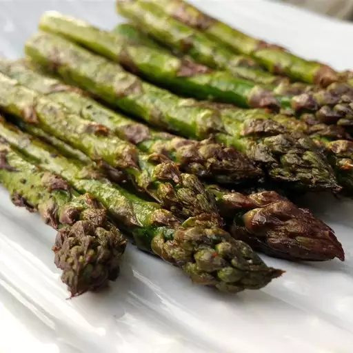

Grilled Asparagus

Description
Tender, smoky, and sweet, the best grilled asparagus is tossed in olive oil with salt and pepper for the perfect, healthy 15-minute side dish.
Ingredients
- Asparagus: Start with a pound of fresh, clean, trimmed asparagus.
- Oil: Olive oil keeps the asparagus from drying out and gives the seasonings something to stick to.
- Seasonings: This grilled asparagus is simply seasoned with salt and pepper.
- 1 pound fresh asparagus spears, trimmed
- 1 tablespoon olive oil
- salt and pepper to taste
Instructions
- Preheat an outdoor grill for high heat and lightly oil the grate.
- Lightly coat the asparagus spears with olive oil. Season with salt and pepper to taste.
- Cook asparagus on the preheated grill, turning often until lightly charred and fork-tender about 3 to 5 minutes.